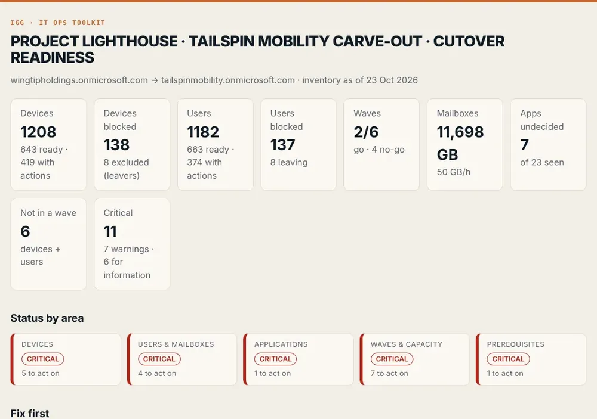

The programme plan says "wave 3, the plant, 30 November", but the inventory says a third of the plant's devices have no TPM, the security chip Windows 11 needs, fourteen kiosks have no primary user and ninety devices run an HMI application nobody has catalogued. On top of that, the wave has two more devices than the technicians can reset in four days. That is the scenario the tenant separation planner published with this post is built around. Its demo is a made-up carve-out of an automotive dealer group from its parent, with four sites and six waves.
None of that shows in the project tracker, and all of it is in the Intune, Entra and Exchange exports. A tenant separation is a thousand small resets that all have to work on the same weekend, so the planner starts the readiness review from those exports, not from the plan.
Four blockers that stop a wave
On devices, four findings block a wave: no Autopilot hardware hash in the target, the fingerprint that lets a reset device join the new tenant; a BitLocker key not escrowed; hardware not Windows 11 capable; and devices not seen for weeks. Other findings become actions for the day itself, such as an OS below the baseline, low disk, domain-only joins, non-compliant devices, local admins the reset will remove, and kiosks and applications without a decision.
On users, the planner flags those with no MFA method, whom Conditional Access in the target will stop on day 1, mailboxes too big for the window, licences with no SKU bought in the target, shared mailboxes split across waves, dormant users and leavers.
Six waves, each failing for a different reason
Each wave gets a go, a go with actions or a no-go, with the reason: technician capacity in devices per day, the blocked share, mailbox hours against the migration window, freeze windows, or a pilot that waits for the target tenant to be finished. In the demo, with 1,208 devices and 1,182 users, the problems are placed so each wave fails for a different reason.
The output is a web report, cutover-plan.md for the change board with the prerequisites checklist and the order of the cutover day, blockers.csv with owner and cleared columns, and CSVs per wave, device, user and application.
How to use it with real data
It runs on Python with the standard library only, with 22 tests and a runbook with the weekly cadence, how to read the verdicts and the usual fix per finding. A read-only PowerShell exporter covers Microsoft Graph and Exchange Online. It is meant to run every week of the programme, after the wave rules and freeze calendar are agreed with the change board.
Where it comes from
It comes from tenant-to-tenant migrations and the Microsoft 365 administration behind them, Windows Autopilot and Intune with ConfigMgr co-management, a Windows 11 migration across sites, and CAB changes with freeze windows. A wave rarely fails on the day; it fails weeks before, when nobody counts the devices without a hardware hash or the users without MFA.
Want to bring it to your environment or adapt it to your case? Get in touch and we can look at it together.
Tech Career Lab · newsletter
Found this useful? Every two weeks I send one practical idea for IT professionals: LinkedIn, projects, networking and hiring processes.
Sign up and get the 33 ideas →